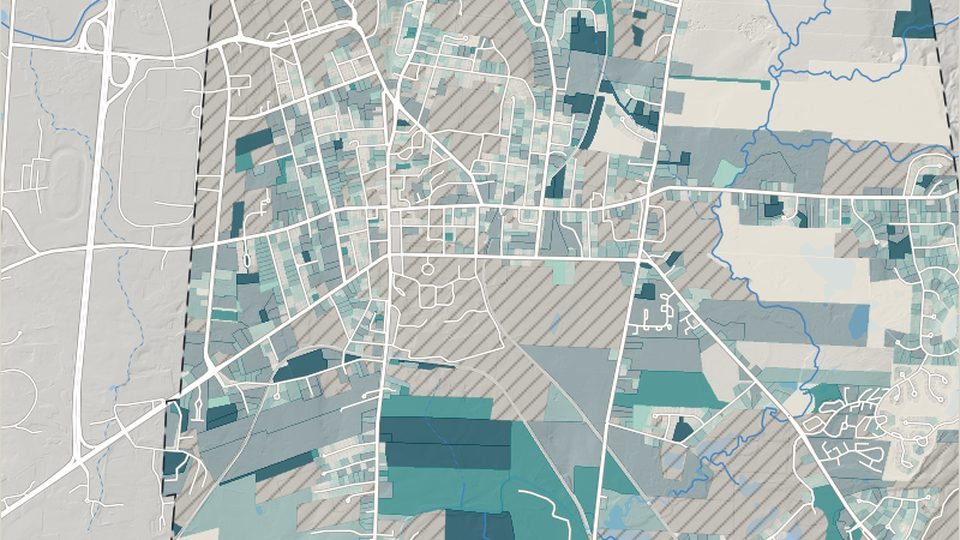

Parcel Intelligence — Amherst, MA
How much of each parcel lies outside mapped constraints, and how much of that depends on the assumptions?
Status: potential feasibility under stated screening assumptions, not a development entitlement.
Open Parcel Intelligence (Amherst, MA)Map: MassGIS (Bureau of Geographic Information), FEMA and USGS data; analysis: this project.